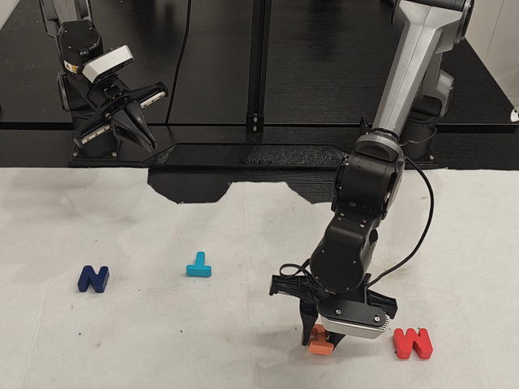
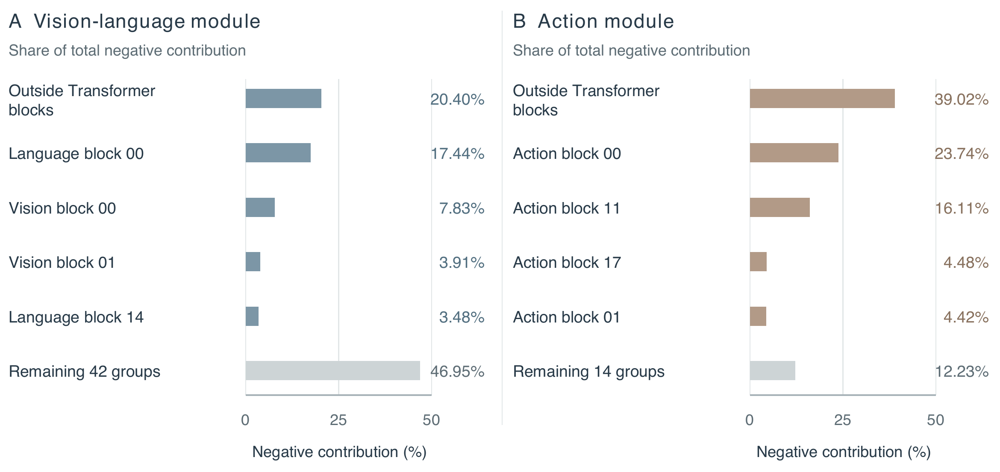
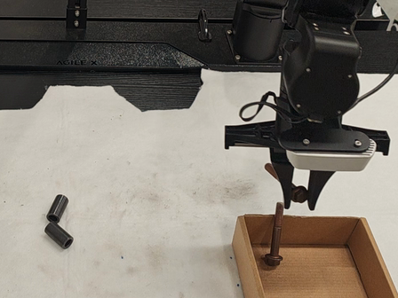

+10 pp
Sort Letters
Grasp, reorient, and place letter blocks into the target arrangement.
π0.5
82%
MorphAct
Watch paired trials
92%
Robot Policies Morphing
with the Worlds They Act In
Every interaction brings new demands. MorphAct reshapes a shared policy’s perception and action weights to meet them.
Scaling robot learning means spanning more environments, operations, and interactions. A shared policy must accommodate the different perceptual and control demands that come with this diversity. These demands keep changing as a robot acts.
“Put the object in the tray.” A robot must choose a grasp, make contact, carry the object, and place it precisely. One instruction takes it through changing visual cues and control demands, while a conventional policy applies the same fixed weights throughout. Different operations can pull those weights in competing directions.
MorphAct gives a shared policy the ability to reshape itself for the interaction in front of it. The scene, instruction, and robot state drive a learned mechanism that generates updates for both perception and action. Shared generators, context-dependent weights.
xt = (ot, ℓ, st) is the current context; Δθ(xt) is its generated update; Ŷt is the predicted action chunk.

Different skills compete inside a fixed policy. We put a shared π0.5 checkpoint under the microscope using 65 atomic manipulation tasks from RoboCasa365, examining where their learning signals agree, where they collide, and how an update transfers to other tasks.
The conflict reaches both sides of the policy: the vision–language module that interprets the scene and the action module that turns that interpretation into movement. Across 16 sampling rounds, almost half of cross-task gradient comparisons point in competing directions.
260 improving updates. Every one raises loss on other tasks. Each update reduces its source-batch loss, yet increases loss on batches from 22–46 of the other 64 tasks, with a median of 32. MorphAct answers this tension by sharing how to adapt and letting the current interaction shape the update.

For module m, negative cosine reveals two tasks asking the same parameters to change in competing directions.
The transfer score tracks the effect of a source update on target loss: positive scores improve it, and negative scores increase it.
A few action groups carry most of the negative contribution. The groups outside Transformer blocks, block 00, and block 11 together account for 78.88% of the action module’s pooled negative contribution.

Conflict extends across vision, language, and action layers. Its strength varies with depth, exposing different adaptation pressures throughout the policy.

Morph first. Then act. At each new observation, a vision–language generator reshapes the policy’s perception weights. The adapted model builds a representation of the scene, and an action generator uses that representation together with robot state to reshape the action weights.
Perception and action meet through the adapted representation. The action generator takes its cue from the policy’s adapted understanding of the scene, tying the two updates to the same interaction. Joint training with the native action objective learns how to generate them together.

The generators share their learned weights across interactions; the updates they produce follow the current context. Gv reads observation and instruction embeddings et. Its adapted features ht combine with robot state st to condition Ga, while the same adapted pass supplies native action conditioning.
Both ht and Ct come from the adapted VLM pass: ht conditions the action generator, while Ct follows the native action-conditioning path.
Each generator uses HY-WU’s structured low-rank synthesis. Learned queries target layers and projection/rank blocks; attention to the condition tokens produces the A/B factors that adapt each selected projection.
For block j, A: din × r and B: r × dout. Frozen base weights provide the shared foundation; each context supplies its own low-rank factors.
Action supervision shapes both the scene representation and the action weights generated from it.
Action conditioning
Action-side parameter generation
Here rt = (ht, Ct), ℓt is the per-sample native loss, and Jy,z = ∂y/∂z. Both routes carry action supervision back to the vision–language generator.
The row-vector projection applies the low-rank residual as two factored operations, uA followed by B. Q/K/V projections use output-head blocks; attention-output projections sum input-head contributions; feed-forward projections use matrix-level factors. Each generated block has its own rank, with layouts following the backbone’s actual widths, depths, and head counts.
Φ includes both generators, the state projection, and projectors retained as trainable by the adaptation configuration. ξ is the randomness used by the native objective.
Generate once for the current observation, reuse throughout the next action chunk, and refresh when the robot observes the world again. The generated updates stay shared across the chunk’s internal prediction steps.
For π0 and π0.5, training samples a time τ and predicts the velocity on the action–noise path:
Adapted multimodal tokens and robot state condition the action generator. Layer-wise prefix key–value states feed the native action path, which retains the backbone’s action, state, and solver-time interfaces.
One adaptation framework lifts three robot-policy backbones. MorphAct improves average success on both LIBERO and Meta-World for X-VLA, π0, and π0.5. It adds up to 16.30 percentage points on Meta-World and takes π0.5 to 98.60% mean success on LIBERO.
50 tasks · 4 difficulty groups · 1,000 rollouts per seed
BaselineBaseline + MorphAct
π0 nearly triples success on Very Hard. It jumps from 20.00% to 58.00%, a gain of 38.00 percentage points. π0.5 raises Hard success from 38.30% to 66.39%, adding 28.09 points.
Scroll to see every column
| Backbone | Method | Easy | Medium | Hard | Very Hard | Avg. | Var. (pp²) |
|---|---|---|---|---|---|---|---|
| X-VLA | Baseline | 72.50 | 46.36 | 48.30 | 55.00 | 55.54 | — |
| MorphAct | 83.99 | 58.18 | 55.28 | 55.00 | 63.11 | 1.8400 | |
| π0 | Baseline | 77.90 | 51.80 | 53.30 | 20.00 | 50.75 | — |
| MorphAct | 82.44 | 71.36 | 56.39 | 58.00 | 67.05 | 0.6342 | |
| π0.5 | Baseline | 70.50 | 45.00 | 38.30 | 41.00 | 48.70 | — |
| MorphAct | 85.77 | 59.85 | 66.39 | 45.67 | 64.42 | 0.3970 |
Twenty rollouts per task. Avg. gives equal weight to Easy (28 tasks), Medium (11), Hard (6), and Very Hard (5). MorphAct scores average three random seeds. Var. is the sample variance of their overall scores (pp²). Bold marks the best score within each backbone, including ties.
40 tasks · 4 suites · 2,000 rollouts per seed
BaselineBaseline + MorphAct
Long-horizon manipulation benefits the most on every backbone. Long gains 9.00 percentage points on X-VLA, 7.20 on π0, and 5.13 on π0.5.
Scroll to see every column
| Backbone | Method | Spatial | Object | Goal | Long | Mean | Var. (pp²) |
|---|---|---|---|---|---|---|---|
| X-VLA | Baseline | 95.40 | 96.60 | 96.00 | 84.20 | 93.05 | — |
| MorphAct | 98.67 | 99.87 | 97.07 | 93.20 | 97.20 | 0.0300 | |
| π0 | Baseline | 96.80 | 98.80 | 95.80 | 85.20 | 94.15 | — |
| MorphAct | 98.00 | 99.60 | 96.60 | 92.40 | 96.65 | 0.0517 | |
| π0.5 | Baseline | 98.80 | 98.20 | 98.00 | 92.40 | 96.85 | — |
| MorphAct | 98.33 | 99.67 | 98.87 | 97.53 | 98.60 | 0.0525 |
Each suite contains 10 tasks, evaluated with 50 rollouts per task and execution horizon H10. Mean averages the four suites. MorphAct scores average three random seeds. Var. is the sample variance of their overall scores (pp²). Bold marks the best score within each backbone, including ties.
The gains come from responding to the current interaction and keeping perception and action connected. X-VLA ablations on LIBERO isolate the value of context, module coverage, and the feature link between the generators.
MorphActAblated variant
Generate from the current context. Task identity takes mean success to 88.25%; current-context generation takes it to 97.20%. MorphAct gains 8.95 pp over Task-ID and 9.70 pp over constant generation.
Adapt perception as well as action. Action-only reaches 81.00% mean success; VLM-only reaches 43.50%. Giving the action predictor an adapted perception of the scene lifts mean success to 86.00%. Coupling adds the next leap.
Generate action parameters from adapted perception. Coupling lifts mean success from 86.00% to 97.20%, adding 11.20 pp. On Long, it adds 21.60 pp, taking success from 71.60% to 93.20%.
Scroll to see every column ↔
| Variant / controlled change | Spatial | Object | Goal | Long | Mean |
|---|---|---|---|---|---|
| MorphActCurrent context; both modules; adapted features | 98.67 | 99.87 | 97.07 | 93.20 | 97.20 |
| ConstantOne fixed generation condition across all tasks | 93.40 | 90.00 | 89.00 | 77.60 | 87.50 |
| Task-IDOne fixed generation condition per task | 90.00 | 90.80 | 91.20 | 81.00 | 88.25 |
| VLM-onlyGenerated updates in the VLM only | 40.00 | 59.00 | 42.00 | 33.00 | 43.50 |
| Action-onlyGenerated updates in the action module only | 88.80 | 92.00 | 73.80 | 69.40 | 81.00 |
| UnadaptedPre-adaptation features condition the action generator | 91.00 | 97.80 | 83.60 | 71.60 | 86.00 |
Constant uses one fixed generation condition across tasks; Task-ID uses one per task. Both retain the policy’s image, language, and robot-state inputs. VLM-only and Action-only adapt their named module. Unadapted adapts both modules and conditions action prediction on adapted features, while its action generator uses pre-adaptation features. Mean averages the four suites.
The same idea carries onto the robot. Across arranging letters, sorting hardware, delivering water, and storing objects in a cabinet, MorphAct improves success on every physical task. It adds 8–14 percentage points over π0.5 across 50 rollouts per task and method.

+10 pp
Grasp, reorient, and place letter blocks into the target arrangement.

+14 pp
Pick hardware and sort it into the target containers.

+8 pp
Grasp water bottles, carry them across the workspace, and deliver them to their destinations.

+12 pp
Engage the cabinet handle and place an object inside.
Four physical manipulation tasks, 50 rollouts per method and task. The images show representative moments from the paper’s robot demonstrations.